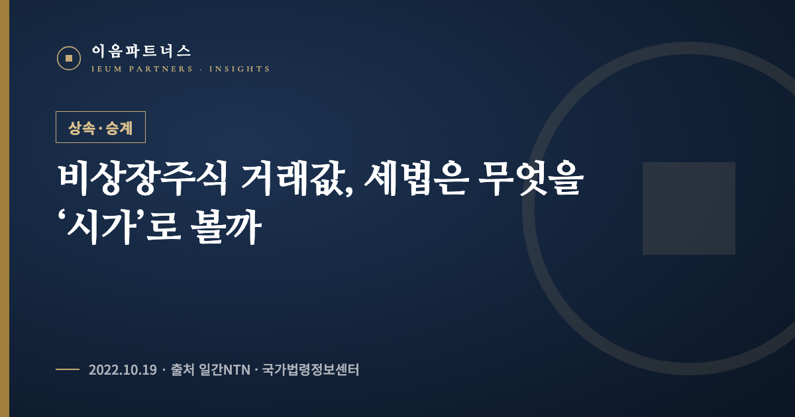

비상장주식 거래값, 세법은 무엇을 ‘시가’로 볼까

대표님 지분을 가족이나 임원에게 넘기거나, 회사가 다른 비상장회사 주식을 사고팔 때 가장 먼저 부딪히는 질문은 ‘얼마가 적정한 값이냐’입니다. 비상장주식은 상장주식처럼 정해진 시장 가격이 없어서, 특수관계인(가족·임원·계열회사처럼 세법이 가까운 관계로 보는 상대) 사이 거래는 나중에 세무조사에서 값이 다시 계산될 수 있습니다. 이 글에서는 세법이 비상장주식의 시가를 어떻게 정하는지, 거래 전에 무엇을 준비하면 좋은지 정리합니다.
지분 이전이나 주식 거래 계획이 있다면 거래 전에 기준을 확인해 두는 것이 비용을 줄이는 길입니다. 우리 회사 상황이 궁금하다면 카카오톡 채널 이음파트너스에서 먼저 함께 점검해 볼 수 있습니다.
세법이 말하는 ‘시가’는 무엇일까
법인세법은 특수관계인과의 거래로 세금을 부당하게 줄였다고 보면 시가를 기준으로 소득을 다시 계산합니다. 이를 부당행위계산 부인(특수관계인과의 거래를 시가 기준으로 다시 계산하는 제도)이라고 합니다. 법인세법 시행령 제89조는 시가를 해당 거래와 유사한 상황에서 특수관계인 외의 불특정다수인과 계속적으로 거래한 가격, 또는 특수관계인이 아닌 제3자 간에 일반적으로 거래된 가격으로 정하고 있습니다(국가법령정보센터).
이런 거래 가격이 없어 시가가 불분명하면 상속세 및 증여세법의 평가 방법을 따릅니다. 비상장주식은 감정가액을 시가로 쓰지 않고, 회사의 순손익가치와 순자산가치를 섞어 계산하는 보충적 평가방법(세법이 정한 계산식으로 주식값을 매기는 방법)으로 평가하는 것이 일반적입니다.
국세청은 실제 질의에 어떻게 답했나
① 과거 거래가가 있다면
국세청은 특수관계 법인에게서 비상장주식을 사들이는 거래에 대한 사전답변에서, 불특정다수인과 계속 거래한 가격이나 제3자 간 일반 거래 가격이 있으면 그 가격을 시가로 보고, 시가가 불분명하면 상속세 및 증여세법 제63조를 준용해 평가한다고 밝혔습니다. 과거 거래가를 시가로 볼 수 있는지는 “구체적인 거래정황과 기업가치의 변동 등을 종합적으로 고려해 사실판단 할 사항”이라고 했습니다(일간NTN).
② 장외 사이트 시세는 시가가 아닙니다
임직원 주식매수선택권(스톡옵션) 행사 때의 시가를 묻는 질의에서는, 사설 장외거래 사이트에 매도·매수 호가로 형성된 시세는 시가로 볼 수 없다고 답했습니다. 다만 금융감독원 전자공시시스템에 공시된 특수관계 없는 제3자 간 거래가 있고, 그 뒤 행사일까지 기간이 짧으며 그사이 거래나 가격을 바꿀 만한 특별한 사실이 없다면 그 거래가액을 시가로 볼 수 있다고 했습니다(일간NTN).
거래가 여러 번 있었다면
두 답변 모두 결론은 ‘사실판단’입니다. 같은 주식이 여러 번 거래됐더라도 가장 최근 값이나 한 번 있었던 값이 자동으로 시가가 되지는 않습니다. 거래 시점과 규모, 상대방과의 관계, 그사이 회사 가치가 달라졌는지를 함께 보게 되므로, 우리 거래와 비교할 만한 정상 거래였는지를 설명할 자료가 중요합니다.
대표님이 지금 확인할 것
- 최근 몇 년간 우리 회사 주식이 거래된 기록(날짜·수량·가격·상대방)을 한 표로 모아 두기
- 각 거래가 특수관계인 사이 거래였는지, 그때 회사 실적이나 사정은 어땠는지 메모로 남기기
- 새 거래 전에 보충적 평가방법으로 계산한 주식값을 미리 확인하기
- 판단이 어렵다면 거래 전에 국세청 사전답변을 받을지 세무사와 상의하기
참고한 자료
- [국세 예규] 시가 불분명한 비상장주식…상속·증여세법 준용해 평가 — 일간NTN(국세신문사) (2022.10.19)
- [국세 예규] 비상장주식 사설 장외거래 사이트 시세…‘법인세법상 시가’로 못 봐 — 일간NTN(국세신문사) (2022.01.10)
- 법인세법 시행령 제89조(시가의 범위 등) — 국가법령정보센터
주식 거래나 지분 이전을 앞두고 값을 어떻게 정할지 고민이시라면 카카오톡 채널 이음파트너스로 편하게 문의해 주세요.
※ 이 글은 일반적인 정보 제공을 위한 것으로, 개별 사안은 세무사·노무사 등 전문가와 함께 확인하시기 바랍니다.